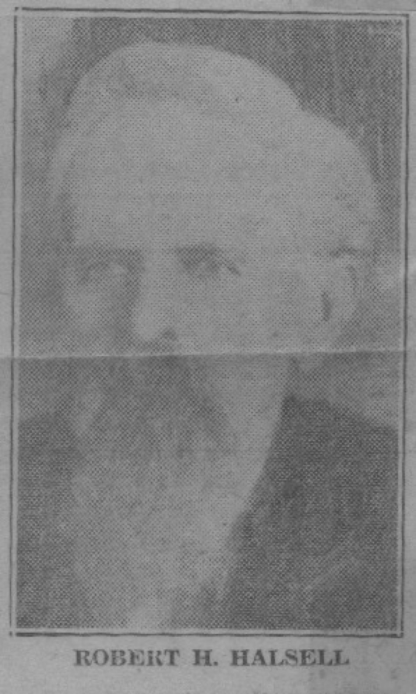
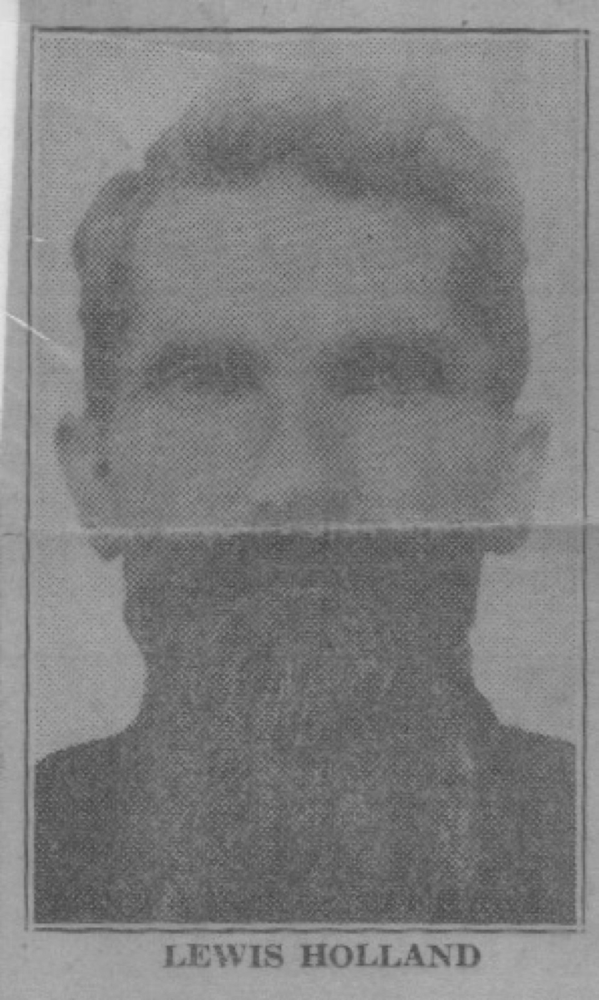
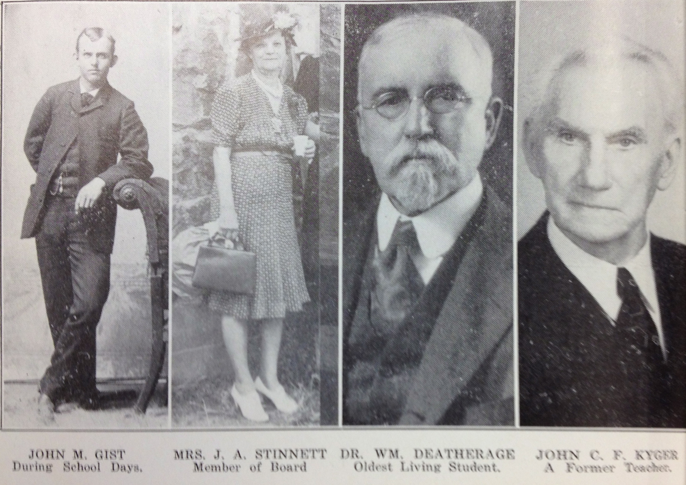

When Robert Roberson Halsell opened his school in Savoy in 1876, he had thirty-eight pupils. That is not many. But Halsell — a man of iron conviction about the value of learning, who would later serve in the Oklahoma state legislature at an age when most men were content to sit on porches — had ambitions that matched the frontier spirit of the place.
By the time the Savoy Male and Female College was officially chartered in January 1880, it was already drawing students from across North Texas and Indian Territory. It offered Bachelor of Arts and Bachelor of Science degrees. Its library was, according to Mattie Lee Boyd's 1939 history, "the complete first library of any school in Texas except the state university at Austin." Students formed literary societies — the Platonian, the Philomathean, the George Eliot Coterie — and debated with students from Grayson College at Whitewright. They published a paper called The Platonian Messenger.

In 1877, a Baptist minister and scholar named Lewis Holland joined Halsell, and the two complemented each other perfectly. Halsell was energetic, outgoing, evangelical about education. Holland was quieter, more reserved, and "profoundly learned" by the accounts of those who studied under him. Together they built something that, for fourteen years, was one of the genuine intellectual centers of North Texas.

The photographs that survive tell their own story. Faculty posed formally in the early 1880s. Philosophy class assembled on the steps for a formal portrait. Students came from farm families who had never sent a child past the county line for school. Indian Territory students sat alongside Texas-born farm children in the same classrooms.


On the night of July 3, 1890, the college building burned. The cause was never recorded in the sources this archive holds. The fire was total.
Halsell tried to revive it — spent two years trying to raise funds — but the money never came. Eventually he left Texas, taught in Oklahoma, served in the state legislature, and died in Durant, Oklahoma, in 1924.
"Not only the people of Savoy and surrounding country enjoyed the services of its excellent teachers, but people came from far and wide over Texas and Indian Territory to seek knowledge within its walls." — Mattie Lee Boyd, 1939
In 1938, the new public school gymnasium in Savoy was named the Halsell Memorial Gymnasium, and the old college's surviving students gathered for the dedication. By 1967, when the annual reunion was held for what may have been the last time, only one surviving ex-student was present: Mrs. Alpha Deatherage Jenkins, of Savoy, Texas. She was the last one who had actually sat in those classrooms.
.jpg)